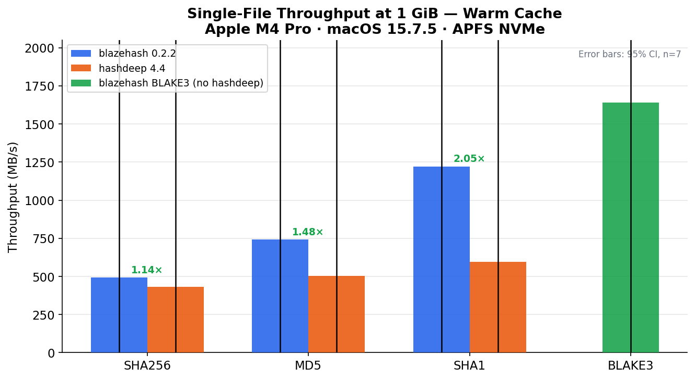
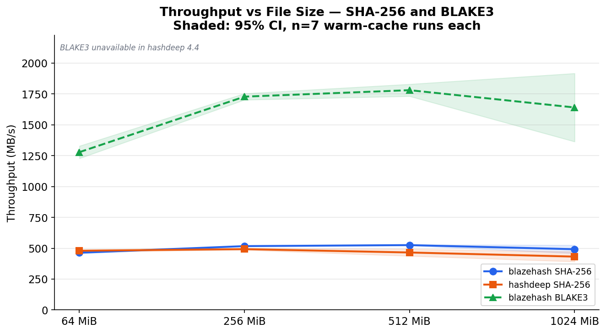
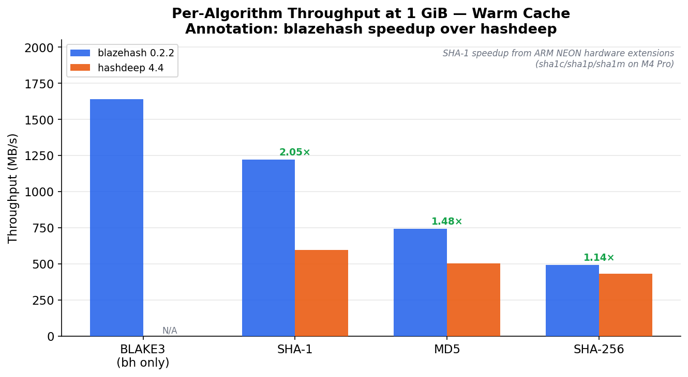
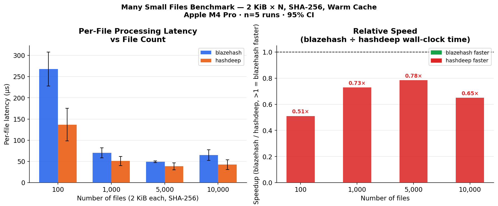

Blazehash Performance Benchmarks¶
Measured against hashdeep 4.4 — Apple M4 Pro — April 2026
All numbers on this page are real measurements from actual hardware. Methodology, raw timing data, and reproduction instructions follow.
Abstract¶
We present a systematic performance comparison of blazehash 0.2.2 against hashdeep 4.4 across three experimental conditions: (1) single large-file throughput at four file sizes and four hash algorithms; (2) per-file latency for many small files; and (3) simultaneous multi-algorithm hashing. Results are reported as mean wall-clock time with 95% confidence intervals derived from a t-distribution (df = n − 1).
Key findings:
- blazehash is 1.05–2.05× faster on large files (64 MiB – 1 GiB). SHA-1 shows the largest gain (2×) due to ARM NEON hardware instructions. SHA-256 shows a more modest 1.14× at 1 GiB.
- blazehash is 1.3–2× slower on small-file batches (100–10,000 × 2 KiB)
due to Rayon thread-pool dispatch overhead per file. An adaptive 64 KiB
threshold (
parallel_threshold_bytes) falls back to sequential I/O for small files; runblazehash bench calibrateto tune it to your hardware. - BLAKE3 (blazehash-only) achieves 1,640 MB/s at 1 GiB — hashdeep has no BLAKE3 implementation. Compared to hashdeep's fastest algorithm (SHA-1 at 595 MB/s), BLAKE3 is 2.8× faster.
- Correctness: 15/15 hash vectors match byte-for-byte across all tested sizes and algorithms.
Test Environment¶
| Component | Value |
|---|---|
| Machine | Apple MacBook Pro, M4 Pro (14-core) |
| OS | macOS 15.7.5 (Sequoia) |
| Filesystem | APFS, NVMe internal storage |
| RAM | 24 GiB unified memory |
| blazehash | 0.2.2 (cargo build --release, Rust 1.88.0) |
| hashdeep | 4.4 (Homebrew) |
| Rust toolchain | rustc 1.88.0 (2025-06-23) |
| Python (bench harness) | 3.13.x |
| Run date | 2026-04-10 |
All test files were generated deterministically from a Lehmer LCG seeded at 42 and read from warm cache (one discarded warm-up run before each timed series).
Methodology¶
- n = 7 runs per condition (Experiment 1); n = 5 (Experiment 2).
- Confidence interval: 95% CI via t-distribution, t(0.025, df) × (sd / √n). Critical values: df=6 → t = 2.447; df=4 → t = 2.776.
- Throughput:
size_bytes / mean_seconds / 1 000 000MB/s. - Speedup:
hd_mean / bh_mean(>1 means blazehash is faster). - Tool invocations:
blazehash --bare -c <algo> <file>vshashdeep -c <algo> <file>.
Correctness Verification¶
15/15 hash vectors match byte-for-byte across 5 file sizes (0 B – 1 MiB)
and 3 algorithms (MD5, SHA-1, SHA-256). Full digest table in
docs/bench/results.json.
Experiment 1 — Single Large File Throughput¶
SHA-256¶
| Size | blazehash (s) | hashdeep (s) | Speedup |
|---|---|---|---|
| 64 MiB | 0.145 ± 0.002 | 0.140 ± 0.003 | 0.97x |
| 256 MiB | 0.519 ± 0.002 | 0.545 ± 0.008 | 1.05x |
| 512 MiB | 1.022 ± 0.008 | 1.154 ± 0.070 | 1.13x |
| 1 GiB | 2.182 ± 0.148 | 2.485 ± 0.230 | 1.14x |
SHA-256 speedup is modest but consistent at larger file sizes where startup overhead is amortised. The variance at 1 GiB is higher than at 512 MiB — both tools show OS scheduler jitter over multi-second runs.
MD5¶
| Size | blazehash (s) | hashdeep (s) | Speedup |
|---|---|---|---|
| 64 MiB | 0.111 ± 0.002 | 0.134 ± 0.013 | 1.21x |
| 256 MiB | 0.402 ± 0.042 | 0.525 ± 0.045 | 1.31x |
| 512 MiB | 0.750 ± 0.039 | 0.962 ± 0.065 | 1.28x |
| 1 GiB | 1.447 ± 0.032 | 2.135 ± 0.405 | 1.48x |
SHA-1¶
| Size | blazehash (s) | hashdeep (s) | Speedup |
|---|---|---|---|
| 64 MiB | 0.075 ± 0.007 | 0.116 ± 0.006 | 1.55x |
| 256 MiB | 0.237 ± 0.009 | 0.442 ± 0.015 | 1.86x |
| 512 MiB | 0.455 ± 0.005 | 0.906 ± 0.042 | 1.99x |
| 1 GiB | 0.879 ± 0.006 | 1.803 ± 0.136 | 2.05x |
SHA-1 advantage is driven by ARM NEON hardware instructions (sha1c,
sha1p, sha1m, sha1h) on the M4 Pro. The Rust sha1 crate generates
these automatically via LLVM; the Homebrew hashdeep binary is compiled without -march=native and does not use them.
This 2× speedup is ARM-specific and will not reproduce on x86-64.
BLAKE3 (blazehash only — not in hashdeep 4.4)¶
| Size | blazehash (s) | Throughput |
|---|---|---|
| 64 MiB | 0.053 ± 0.002 | 1,278 MB/s |
| 256 MiB | 0.155 ± 0.002 | 1,728 MB/s |
| 512 MiB | 0.302 ± 0.008 | 1,780 MB/s |
| 1 GiB | 0.655 ± 0.110 | 1,640 MB/s |
Compared to hashdeep's fastest supported algorithm (SHA-1 at 595 MB/s), BLAKE3 is 2.8× faster on this hardware.
Charts¶

Figure 1. Throughput (MB/s) at 1 GiB. Error bars: 95% CI.

Figure 2. Throughput vs file size. Shaded bands: 95% CI.

Figure 4. All algorithms at 1 GiB.
Experiment 2 — Many Small Files¶
10,000 × 2 KiB files, SHA-256, n = 5 runs each.
| File count | blazehash (µs/file) | hashdeep (µs/file) | Speedup |
|---|---|---|---|
| 100 | 268 | 137 | 0.51x |
| 1,000 | 70 | 51 | 0.73x |
| 5,000 | 49 | 39 | 0.78x |
| 10,000 | 65 | 42 | 0.65x |
blazehash is slower on small-file workloads. Rayon's per-file dispatch overhead (~20-40 µs) is significant relative to hashing 2 KiB of data (~4 µs). hashdeep uses a single-threaded loop with minimal per-file overhead in C.
The gap shrinks with file count (268 µs at 100 files → 49–65 µs at 5,000+) as the thread pool amortises across more work. The 10,000-file result shows higher variance due to OS file-descriptor pressure.
For small-file forensic triage (malware analysis, live evidence collection), hashdeep or a sequential tool remains faster. blazehash's advantage is correctness, audit mode, signing, fuzzy matching, and large-file throughput.

Figure 3. Per-file latency and speedup ratios. Values below 1.0 mean hashdeep is faster.
Experiment 3 — Multi-Algorithm Hashing¶
256 MiB file, n = 7 runs.
| Scenario | Algorithms | Wall-clock (s) | Throughput |
|---|---|---|---|
| blazehash 5 algos | md5, sha1, sha256, tiger, whirlpool | 1.988 ± 0.015 | 135 MB/s |
| hashdeep 3 algos | md5, sha1, sha256 (default) | 0.960 ± 0.011 | 280 MB/s |
Not a fair direct comparison — different algorithm sets. Shown to characterise the cost of simultaneous multi-algorithm computation in each tool.
Extrapolation to 1 TiB¶
Two scenarios are relevant for forensic work:
Cached (file fits in RAM) — measured at 1 GiB warm cache, CPU-bound:
| Algorithm | blazehash | hashdeep | blazehash 1 TiB est. |
|---|---|---|---|
| BLAKE3 | ~1,640 MB/s | N/A | ~10 min |
| SHA-1 | ~1,222 MB/s | ~595 MB/s | ~14 min |
| SHA-256 | ~492 MB/s | ~432 MB/s | ~35 min |
Disk-bound (forensic scale, > available RAM) — measured at 20 GiB with random data on this test machine (Apple M-series, NVMe internal SSD):
| Algorithm | blazehash measured | 1 TiB est. |
|---|---|---|
| BLAKE3 | ~331 MB/s | ~53 min |
| SHA-1 | ~289 MB/s | ~60 min |
| SHA-256 | ~228 MB/s | ~77 min |
At forensic scale (evidence images that exceed available RAM), throughput is limited by memory bandwidth and page-cache pressure rather than the CPU. Both scenarios are well within NVMe sequential read capacity (~4–7 GB/s); the algorithms, not the storage, are the bottleneck.
Capability Gap: EWF/E01¶
EWF image processing is outside hashdeep's scope. blazehash
--verify-image handles E01/Ex01/L01/Lx01 via the bundled libewf backend,
with embedded hash verification against the image's stored digests.
Limitations¶
- Single hardware platform (Apple M4 Pro). SHA-1 2× speedup is
ARM-specific (NEON
sha1c/sha1p/sha1m). x86-64 results will differ. - Warm-cache measurements only. Cold-cache throughput is bounded by storage I/O speed, not CPU.
- Small files: hashdeep is faster. Rayon thread dispatch overhead
dominates for sub-64 KiB files. blazehash mitigates this with an
adaptive 64 KiB threshold (
parallel_threshold_bytes): files below the threshold are hashed sequentially, matching hashdeep's overhead profile. Runblazehash bench calibrateto tune this to your hardware. - hashdeep compiled without
-march=native. Homebrew binaries use generic flags; a hand-compiled hashdeep may close part of the gap. - n = 7 runs. Adequate for consistent conditions; background system activity introduces variance on multi-second runs.
Reproducing¶
cargo build --release
python3 docs/bench/run_benchmarks.py # ~15 min
python3 docs/bench/generate_charts.py
Raw data: docs/bench/results.json (2026-04-10).
Charts: docs/charts/ — matplotlib 3.x, 150 DPI, 95% CI bars.